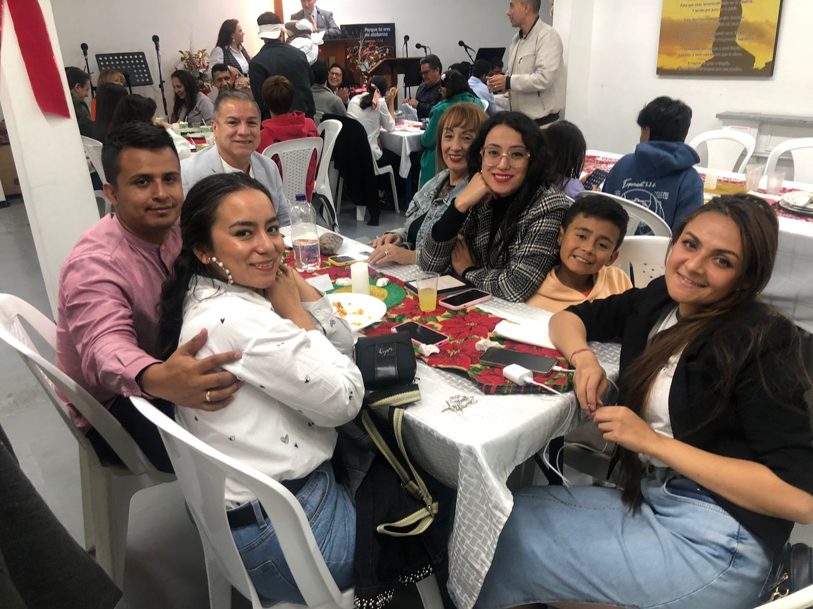
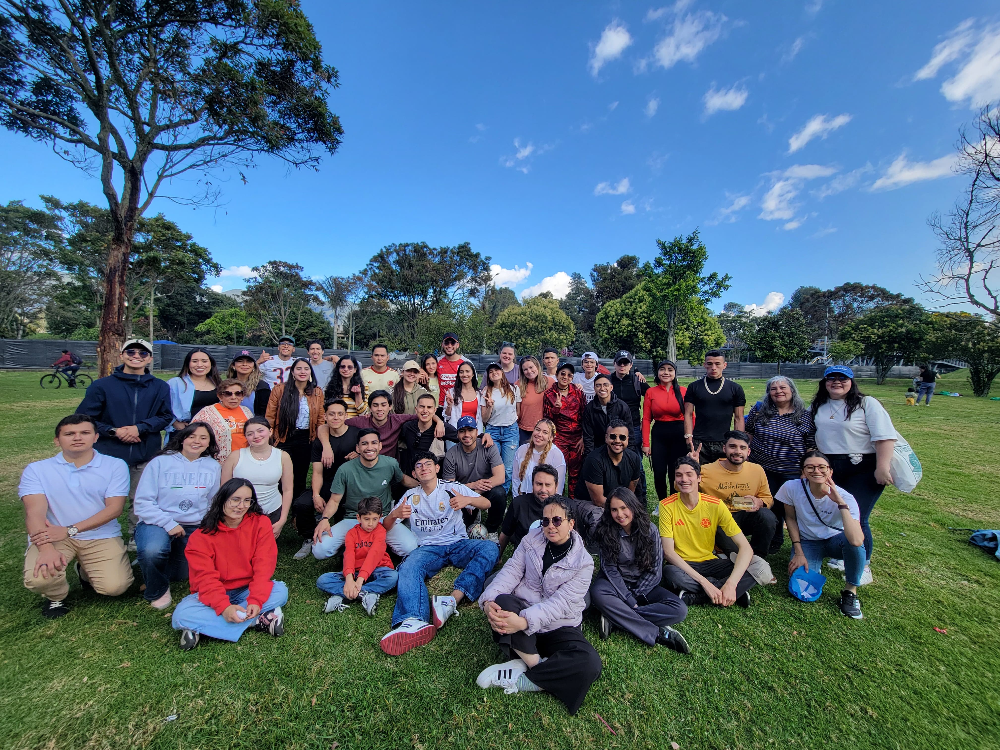
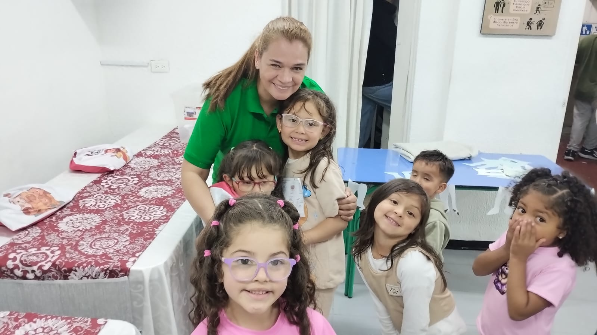
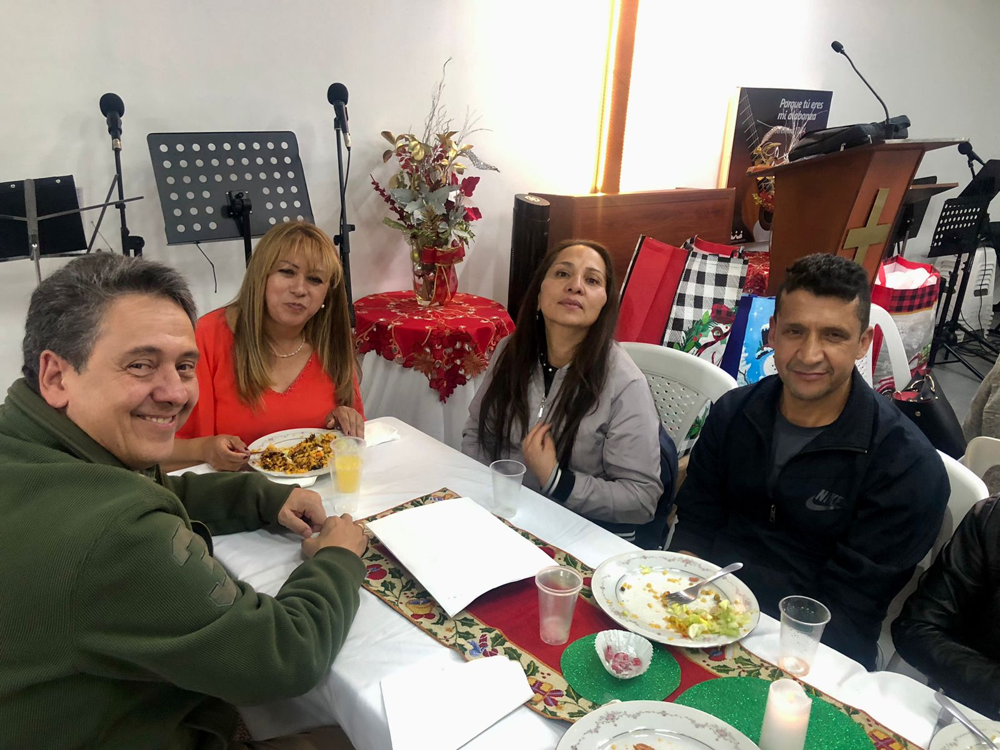
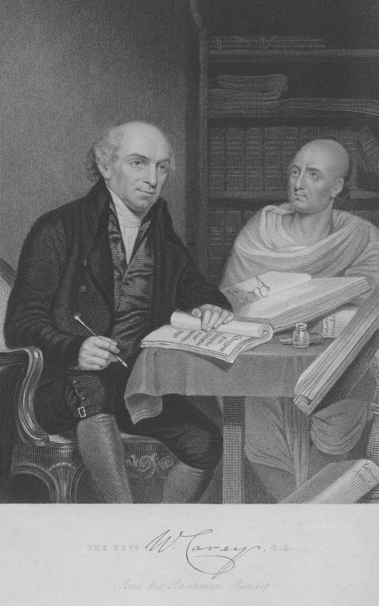
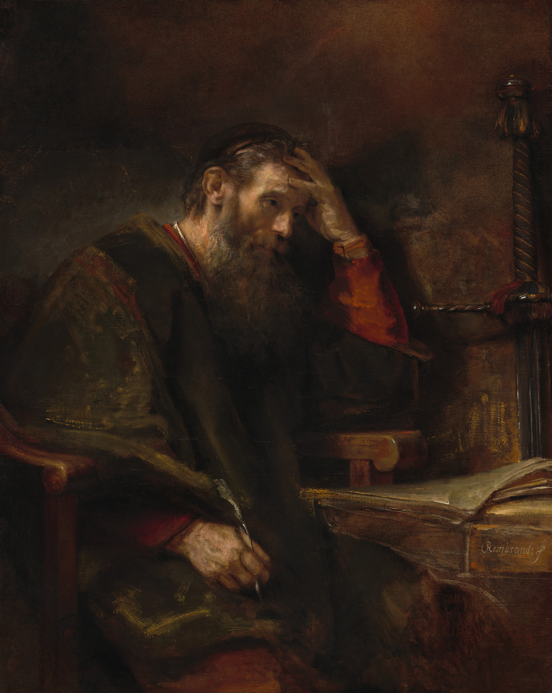
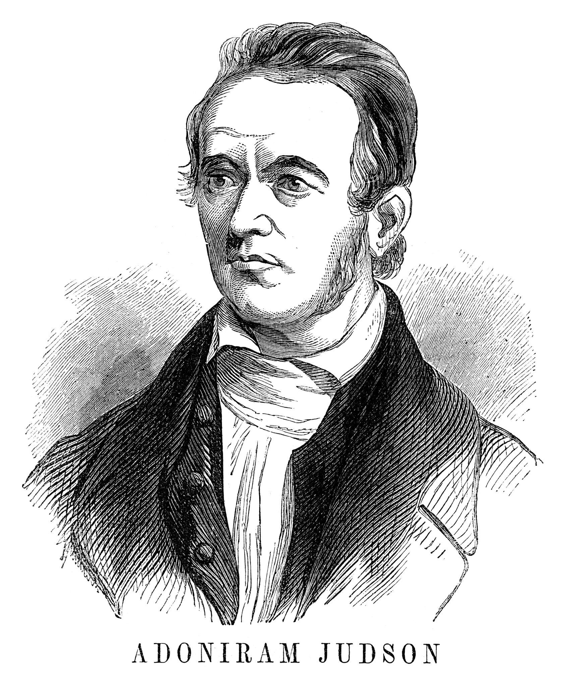

Damas
Comunidad de mujeres que crecen juntas en la fe.
"Tanto amó Dios al mundo que dio a su Hijo, para que todo el que cree en Él no se pierda, sino que tenga vida eterna." — Juan 3:16

Un lugar donde conocer a Dios, crecer en comunidad y vivir con propósito.
Aquí no vienes solo a asistir, vienes a pertenecer. Creemos que cada persona tiene un propósito dado por Dios para servirle, y nuestro deseo es caminar contigo en ese proceso.
Ya sea tu primera vez o lleves años en la fe, este es un espacio para encontrar y permanecer en la verdad, la fe en Cristo y una comunidad real.
Ver horarios de cultoTe esperamos cada semana. Todos son bienvenidos.
Cl. 134 #17-2 a, Bogotá · ¿Primera vez? Escríbenos
"Quiero darles la bienvenida a nuestra Iglesia Bautista Valle de Josafat. Tenemos una experiencia de 20 años en el Ministerio, con mi esposa, con mi familia; y de tal manera que nos ha permitido el Señor llevar el Ministerio a muchas personas y a muchas familias."
"El principio fundamental de nuestra iglesia es ser bibliocéntrica y cristocéntrica, predicar la palabra de Dios pura, con doctrina pura y de tal manera pacificar un evangelio que nos lleve a la vida eterna…"
"Tenemos diferentes ministerios: el Ministerio de enseñanza, el ministerio de alabanza, los ministerios de oración y muchos más, que pueden enriquecer su vida espiritual… Estamos para servirles como siervos de Jesucristo."
Dios ha dado dones a cada uno para edificar a su iglesia y servir a otros con amor.
Hay un espacio para ti, sin importar tu edad o etapa de vida.
Comunidad de mujeres que crecen juntas en la fe.

Espacio para jóvenes que buscan vivir su fe con propósito.

Enseñamos a los más pequeños el amor de Cristo.

Intercedemos juntos por la iglesia, las familias y las naciones.

Acompañamos a quienes atraviesan momentos difíciles.
"Pero tú habla lo que está de acuerdo con la sana doctrina." — Tito 2:1
Es el fundamento que define quién es Dios, qué es el evangelio y cómo vivimos la fe. Una iglesia sana se edifica sobre la verdad revelada en las Escrituras. La sana doctrina protege el evangelio, guía la vida del creyente y glorifica a Dios.



El evangelio no se guarda, se anuncia.
Creemos que la Gran Comisión es el mandato central de la iglesia. Salimos activamente a compartir el evangelio en nuestra ciudad y más allá de nuestras fronteras, sembrando la semilla de la Palabra con fe y oración.